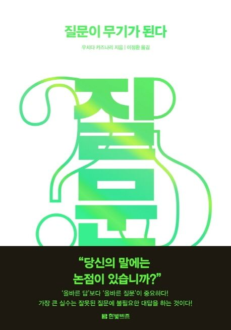

책 서평: 질문이 무기가 된다
해결해야 할 문제를 설정하는 과정에 꼭 필요한 논점사고

읽기 전 생각
가설이 무기가 된다에 이은 두 번째 시리즈.. 질문이 무기가 된다에서 하고싶은 말은 무엇인가?
문제 해결 과정에 있어서 가설과 질문 둘은 어떻게 구분되는가?
읽은 후 생각
일에서의 문제해결 접근 방식은 문제발견, 문제해결, 실행 3가지 과정으로 크게 나눠볼 수 있는데, 문제해결 방식에 있어서 “논점 사고”가 가장 큰 힘을 발휘하는 것은 “문제발견” 과정이다.
본 시리즈의 저자가 쓴 <가설이 무기가 된다>는 주로 문제해결에 역점을 둔 책이며, <질문이 무기가 된다>는 주로 문제발견에 역점을 둔 책이다.
그러나 둘은 동떨어진 내용이 아니다.
문제를 발견하는 일에 가설사고를 빼놓을 수 없고, 문제를 해결할 때도 논점사고는 끊임없이 등장한다.
즉 둘은 떼놓을 수 없는 밀접한 관계이며, 대립, 상하관계, 먼저 또는 나중으로 사용되는 개념이 아니다.
논점사고와 가설사고를 한마디로 정의해보자면 다음과 같다.
논점사고: 문제해결 최상류에 있는 ‘해결해야 할 문제설정’ 과정
가설사고: ’가상의 해답’을 바탕으로 사고하는 접근 방식
사실 해결해야할 문제를 설정하는 과정에서 가설사고가 필요하다. 즉, 둘은 상생하는 관계이며 앞서 이야기했듯 뗄래야 뗄 수 없는 관계이다.
하이라이트
1장 당신은 ’진짜 문제’를 해결하고 있는가?
문제가 주어졌을 때 또는 상사로부터 논점이 주어졌을 때, ‘논점설정이 잘못되어있지 않은가?’ 하는 관점이 필요하다.
문제해결은 비즈니스 성과를 올릴 때 매우 중요한 요소이지만, 암묵적으로 ’올바른 문제’를 해결해야 한다는 전제가 붙는다.
이에 따라, 논점사고는 ’자신이 풀어야 할 올바른 문제’를 정의하는 과정이라 할 수 있다.
2장 논점후보를 고르는 것이 전략사고의 출발점이다.
가설을 세우고 한정된 정보로 압축하여 결론을 내리듯, 문제(즉, 논점) 또한 우선순위를 매겨 한두 가지로 압축해 해결하는 것이 필요하다.
현상이나 관찰사실을 문제점(논점)과 구분하여 생각하는 것이 중요하다.
e.g. 출산율 저하는 현상이지 논점이 아니다.
출산율 저하 현상과 관련한 논점 후보로 4가지를 추릴 수 있다. 각 논점에 따라 해결 방법은 달라진다.
노동인구 감소로 인한 GDP, GNP 감소
청년층 부담 증가
노동인구 감소로 인한 국가재정 파탄
지방도시의 고령자 비율 증가로 인한 활기 저하
3장 예측이나 퀄리티로 논점을 압축한다.
전략이란 버리는 것이다.
비즈니스에서 중요한 것은 하지말아야할 것을 정하는 것인데, 이는 매우 어렵다.
예측을 통해 논점의 질의 좋고 나쁨을 가려낼 수 있으려면 경험을 축적해야 한다.
여기서 예측의 정밀도는 뒤에 설명할 “서랍의 수”에 따라 달라지는데, 경험이 쌓이면 서랍이 증가하고, 서랍이 증가하면 예측이 쉬워진다.
4장 전체적인 모습을 확인하고 논점을 확정한다.
프로빙(probing, 무엇인가 자극을 주어 상대방의 반응을 이끌어내 본질을 찾는 수법)으로 철저하게 탐색하여 논점의 가설을 세운다.
- e.g. 질문을 던져 상대방의 의견 듣기, 가설을 설명하고 반응 보기, 현장을 보기, 예상 밖의 질문 던지기
의뢰인이 숨기고 있는 진정한 의도를 파악한다.
머릿 속 가상 데이터베이스인 서랍을 참조한다.
논점을 명확히하고 구조화한다.
5장 사례를 통해 논점사고의 흐름을 파악한다
처음에 주어진 논점을 곧이곧대로 받아들이지 않는 것, 업계에서 문제로 여겨지고 있는 것을 논점으로 오해하지않는 것이 중요하다.
- 업계 전체의 문제와 우리 회사의 개별적 문제(즉, 논점)를 구분하여 생각한다.
6장 논점사고력을 높이기 위해
논점사고를 정확하게 실행할 수 있는 능력을 갖추려면, 평소에 진짜 문제가 무엇인지 항상 생각하는 자세가 중요하다. (잔심을 남기자)
직장인 성장에서 구체적 스킬이나 지식의 개발과 축적은 중요하다. 그러나, 주인의식이나 사물을 보는 견해나 사고방식은 중장기적으로 엄청난 차이로 나타난다.
여러개 논점을 생각한다. 논점사고를 하는데 여러 개 논점이 떠오르지 않으면 주의해야 한다.
나만의 서랍을 서서히 늘린다
문제의식이 서랍을 만든다
수집, 정리, 기억하지 않는다
반론이 들어와도 설득하지 않고 듣는다
액션 아이템
실험 분석 파이프라인, 통계 엔진 및 대시보드 구성을 담당하고 있는 팀으로서 타 도메인의 PO로부터 실험을 통해 특정 문제를 해결하고 싶다는 요청이 들어오는데, 이러한 때가 그야말로 논점사고가 필요한 순간이 아닌가 싶다.
해당 도메인에서 해결하고자 하는 문제가 “정말로 문제인 것이 맞는지?” 먼저 의심해보는 자세가 필요하다.
여러 논점들을 세워보고 토론을 통해 “올바른 문제(논점)”을 찾는다.
그리고, 가설사고를 통해 해결 방법에 대해 고찰해보고, 우리에게 진정 필요한 실험 피쳐가 무엇일지 고민해본다. 그리고, 해당 실험 피쳐의 효과를 체크하기 위해 어떤 지표가 실험 지표로서 충분히 민감하게 동작할 수 있을지 고민해본다.
이 과정은 책에서도 이야기하듯 선형적이지 않을 수 있으며, 이리저리 왔다갔다하며 최적화 될 것이다.
위와 같은 과정으로 논점 사고와 가설 사고를 연습하다보면, 자연스럽게 실험 요청에 대한 대응 절차 수립 및 PO 조직에서 수행해야 할 실험 업무 가이드 수립을 할 수 있을 것이라 생각된다.
위와 같은 대응 절차, 가이드 수립에 집착하는 이유는 사실 “실험을 통해 제품을 개선한다.”라는 사실 자체는 중요한 논점은 아니기 때문이다.
“실험을 통해 구체적으로 어떻게 제품을 개선하고 있는가?”가 중요하다. 논점 사고에서 나오듯 고객이 받을 가치를 미리 예측해보고, 올바른 가설과 지표를 설계하여 실험의 경험을 축적해 나가는 조직과, 그저 나이브하게 “이게 지금 문제라고들 하니까.. 이런 피쳐 넣어봐야지.”라고 나이브하게 생각하여 실험의 경험을 축적해나가는 조직의 결과값은 완전히 다를 것이다.
Reuse
Citation
@online{bang2024,
author = {Bang, Taemo},
title = {책 서평: 질문이 무기가 된다},
date = {2024-08-01},
url = {https://taemobang.com/posts/2024-08-01-book-hypothesis/},
langid = {kr}
}